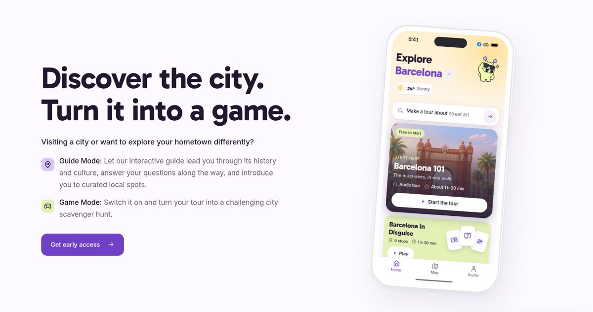
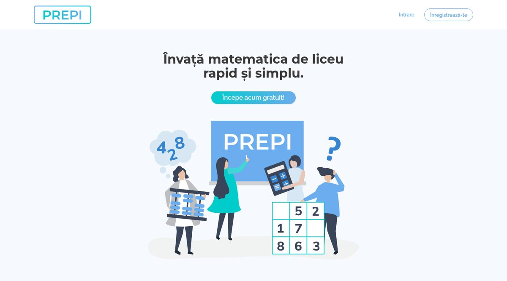

Portfolio
I'm a co-founder, product designer and software engineer living in Barcelona. Right now I'm building The Schnitz, freelancing, and learning on Augment.
Projects

The Schnitz now
A self-guided city tour app. Pick a topic, like street art or good coffee, and it plans a walk with a story at every stop. You can also play it as a scavenger hunt, where the streets around you hold the answers to the riddles.
I designed it myself, from the first sketches and the brand to every screen in the app, and I build it too.
Co-founder and CTO. Design and engineering.

Prepi 2018 – 2021
Maths and BAC prep for high school students in Romania. While I was there it grew to more than 21,000 students. Today's Prepi is a relaunch led by one of my co-founders.
I worked closely with a freelance designer and turned their designs into the product, building the platform and writing the custom CSS to match every detail.
Co-founder and CTO. Engineering.
CV
- NowCo-founder and CTO, The SchnitzDesigning the product and brand myself and building the app, from the first sketches to early access.
- 2024 – nowFrontend developer, QontoFreelance. Working on local payments and transfers in Ember and React, and helping move the app from Ember to React.
- 2022 – 2023Frontend engineer, RevolutBuilt features for Revolut People, Revolut's HR platform, in React, and stayed on the project through to its launch.
- 2021 – 2022Lead frontend developer, Upgrade EducationBuilt an online learning platform from scratch in React, TypeScript and Node.js, which reached 400+ paying users. Led a team of six developers, testers and designers, and cut onboarding from a week to a day.
- 2018 – 2021Co-founder and CTO, PrepiBuilt the platform in JavaScript, Node.js and Express, working with a freelance designer to bring their designs to life in code. Grew it to 21,000+ students.
- 2020Online instructor, iD TechTaught HTML, CSS and JavaScript to 42 students, aged seven and up, at the first online iD Tech summer camp.
- 2019 – 2020Admission processor, Minerva Schools at KGIInternship with the admissions team, processing student applications.
- 2017 – 2018Freelance full-stack engineer, UpworkDelivered 15+ client projects, from custom WordPress sites to web apps in TypeScript. Earned Rising Talent status with a 4.95/5 rating, and cut a pharmaceutical client's delivery time by 30% by automating their manual work.
Studies
- 2026 – 2027MBA, Augment
- Two yearsUndergraduate, Minerva Schools at KGI
Skills
- CodeReact, TypeScript, Ember, React Native, Expo, Node.js, Express, HTML5, CSS, Sass, PHP, WordPress
- AIClaude, Codex, Cursor, Orca, MCP
- DesignFigma, Photoshop, Illustrator, Final Cut Pro